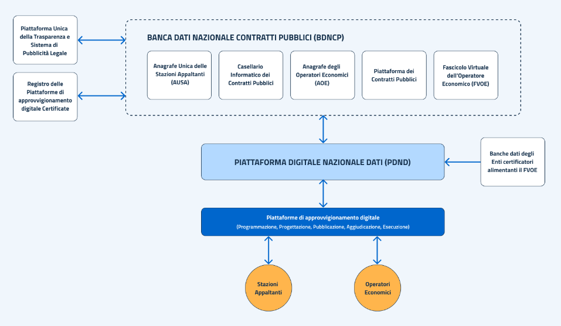

Home
Importante
I documenti ufficiali aggiornati sono pubblicati sul seguente repository
Questo sito fornisce materiale supplementare per la consultazione di una copia della documentazione, per esempio una Swagger UI per la visualizzazione delle specifiche. Si precisa che questo sito è una iniziativa indipendente di un privato cittadino, non affiliato con l'Autorità Nazionale Anticorruzione o altri enti pubblici, e non rappresenta una fonte ufficiale. La documentazione delle specifiche OpenAPI potrebbe non essere aggiornata.
Ultimo aggiornamento delle specifiche OAS:
06/03/2024.
Documento specifiche servizi npa:
Specifiche OAS (visualizzate con Swagger UI)
JWS (JSON Web Signature)
Documentazione sulla struttura del token JWS necessario per interagire con gli eService di ANAC:
Glossario codice degli appalti
https://www.codiceappalti.it/Home/Legge/?legge=GLOSSARIO_APPALTI
Developers Italia - piattaforma contratti pubblici
https://developers.italia.it/it/piattaforma-contratti-pubblici/

Schema Operativo
Regole Tecniche
Developers Italia - Interoperabilità
https://next.developers.italia.it/it/interoperabilita/
🌟 Certificazione componenti piattaforme
https://www.agid.gov.it/it/piattaforme/procurement/certificazione-componenti-piattaforme
[MO_PDND]  Manuale operativo della PDND Interoperabilità
Manuale operativo della PDND Interoperabilità
Manuale operativo della PDND Interoperabilità
In questo sito si trovano informazioni
e istruzioni riguardanti i seguenti
argomenti:
-guida all'adesione
-ambiente di collaudo
-e-service
-client e materiale crittografico
-come generare e caricare chiavi di sicurezza
🎥 Video Tutorials
In questo sito si trovano video esemplificativi correlati alle cose spiegate più in dettaglio qui sopra, nel paragrafo "Interoperabilità - procedura".
https://www.youtube.com/playlist?list=PLZcD-ZoVxFzi1f2-taSdg7a3d2UQse3_Q
Il nuovo modello di interoperabilità:
[LG_PDND_INTER] Linee Guida sull’infrastruttura tecnologica della Piattaforma Digitale Nazionale Dati per l’interoperabilità dei sistemi informativi e delle basi di dati
[LG_INTER_TEC] Linee Guida sull’interoperabilità tecnica delle Pubbliche Amministrazioni:
Linee Guida sull’interoperabilità tecnica delle Pubbliche Amministrazioni
[ModI] Modello di Interoperabilità
Linee Guida Tecnologie e standard per la sicurezza dell’interoperabilità tramite API dei sistemi informatici
- Linee Guida sull’infrastruttura PDND
tecnologica della Piattaforma Digitale Nazionale Dati per l’interoperabilità dei sistemi informativi e delle basi di dati:
- Linee Guida Tecnologie e standard
per la sicurezza dell’interoperabilità tramite API dei sistemi informatici: https://www.agid.gov.it/sites/default/files/repository_files/linee_guida_tecnologie_e_standard_sicurezza_interoperabilit_api_sistemi_informatici.pdf
- Linee guida sul punto di accesso
telematico ai servizi della Pubblica Amministrazione: https://www.agid.gov.it/sites/default/files/repository_files/lg_punto_accesso_telematico_servizi_pa_3112021.pdf